Cathedral


Kevin Chu · Fall 2026
Prokudin-Gorskii photographed the same scene three times through blue, green, and red filters. Each scan contains those three grayscale exposures stacked vertically. Putting them together gives us color, but the exposures are slightly displaced. Without alignment, the edges would appear doubled or have colored fringes.


I first split each scan into three equal parts in B, G, R order. I kept blue fixed and searched for the horizontal and vertical shifts that best aligned green and red with it. For the small JPGs, I tried every combination of shifts from −15 to 15 pixels in both directions.
To choose the best shift, I tested both L2 distance and normalized cross-correlation (NCC). In the formulas below, A is the shifted channel and B is the blue reference, using only the pixels being scored.
L2(A, B) = √[Σᵢ(Aᵢ − Bᵢ)²]
L2 measures how different the corresponding pixel values are. Smaller is better, so I chose the shift with the lowest score.
NCC(A, B) = [(A − Ā) · (B − B̄)] / [‖A − Ā‖₂ ‖B − B̄‖₂]
Ā and B̄ are the average pixel values. Subtracting them removes an overall brightness difference, and dividing by the vector lengths makes the score compare the light-and-dark patterns. Larger is better, so I chose the shift with the highest NCC.
One challenge was that the scans have bright and dark borders. Including them in the score can make the algorithm line up the borders instead of the scene. To avoid this, I only calculated either score on the interior pixels. I excluded a margin around each edge, roughly 10% of the shorter image dimension and at least as wide as the search radius. This scoring margin also excludes pixels that wrap around to the opposite edge when I shift a channel with np.roll.
After finding the best shifts, I moved the original green and red channels and stacked them with blue in RGB order. Here are both single-scale results for each small JPG. Each caption lists the green and red shifts relative to blue as (x, y): positive x moves right, and positive y moves down.


Both metrics found the same shifts on these three small images.
The same search becomes expensive on the large TIFFs. Each comparison involves millions of pixels, and the channels can be displaced much farther than 15 pixels. Increasing the search window would mean testing too many more shifts on much larger images.
I used an image pyramid to find the shift in stages. First, I repeatedly resized both channels to half their size, smoothing during downsampling to avoid aliasing. Once either dimension was below 200 pixels, I ran the same ±15-pixel search on that small image. A large displacement in the original scan becomes a small displacement at this scale.
Then I worked back toward full resolution. At each level, I doubled the previous offset because the image was twice as large, applied that rough shift, and searched ±2 pixels for fine-tuning corrections. I added the correction to the estimate and repeated. The smaller images help find the general position, and the larger images refine the details.
The border problem also matters during fine-tuning. Even though I only search ±2 pixels, the channel has already moved by the larger shift estimated at the previous level. Its borders and wrapped pixels can now extend farther into the image. I increased the scoring margin to cover that shift plus the small correction window, so either metric still compares only the scene’s interior.
I ran the pyramid separately with NCC and L2, keeping the same search and border settings for every image. Both scores use the original channel intensities, rather than edges or other features. The alignment is estimated using smaller images, but the final shifts are applied to the original full-resolution channels.
Below are both results for all 14 provided images. NCC is my main result set. Direct NCC fails on Emir, which I explain and improve at the end.
The comparison also shows a limitation of L2. It directly compares brightness values, which can differ between color exposures even when the scene is aligned. On Church and Lugano, it chose large incorrect shifts and produced double images. NCC compares the brightness pattern instead and gave more reliable results overall, so I used it for my main results.


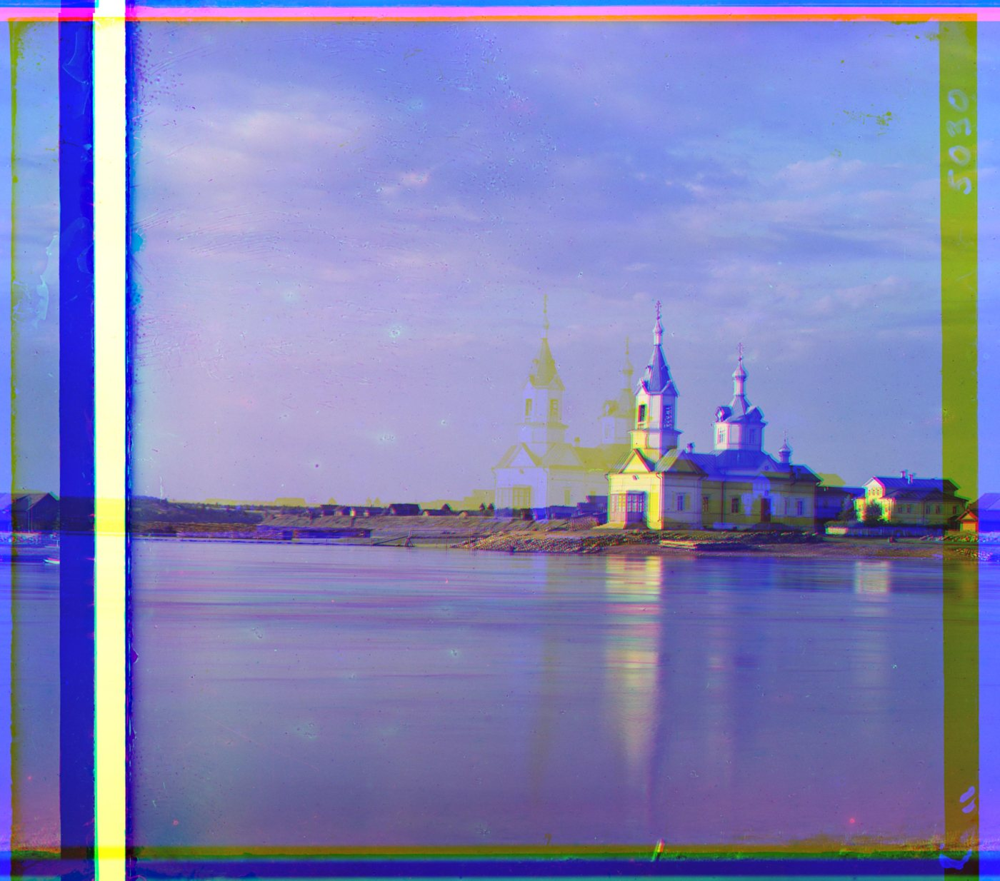
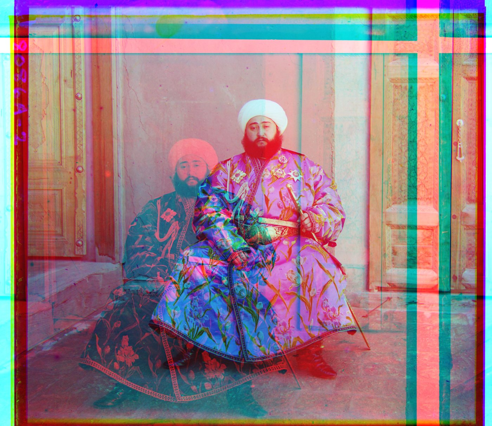
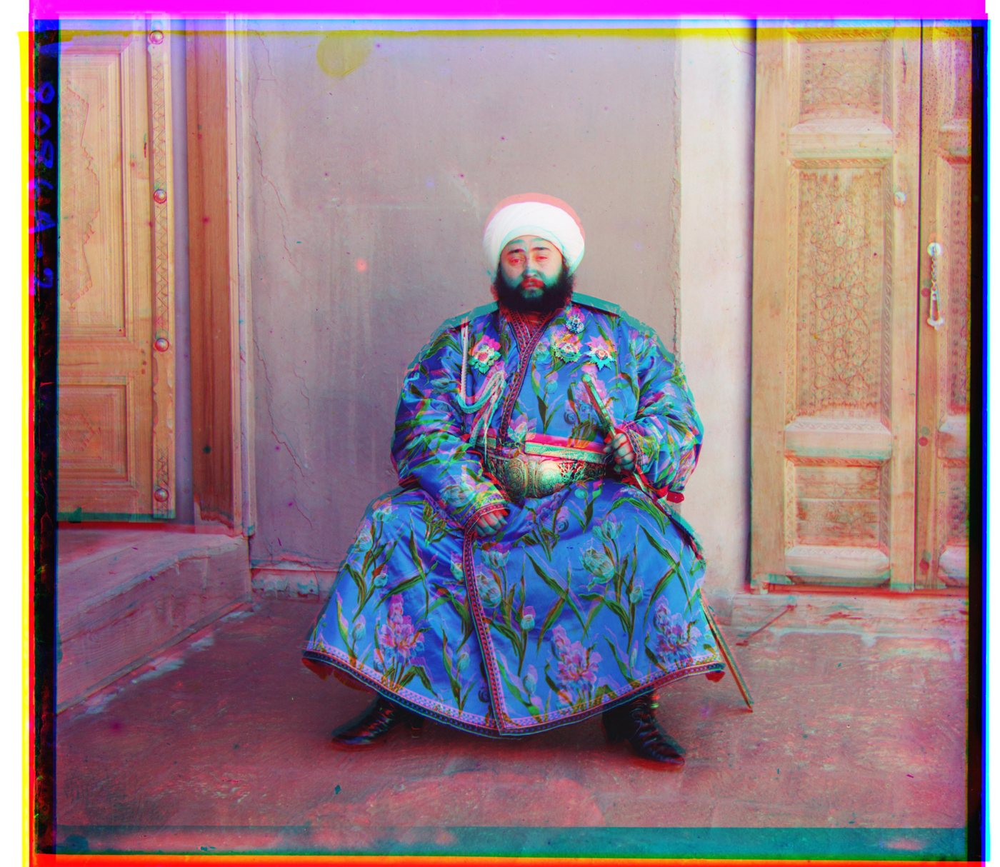
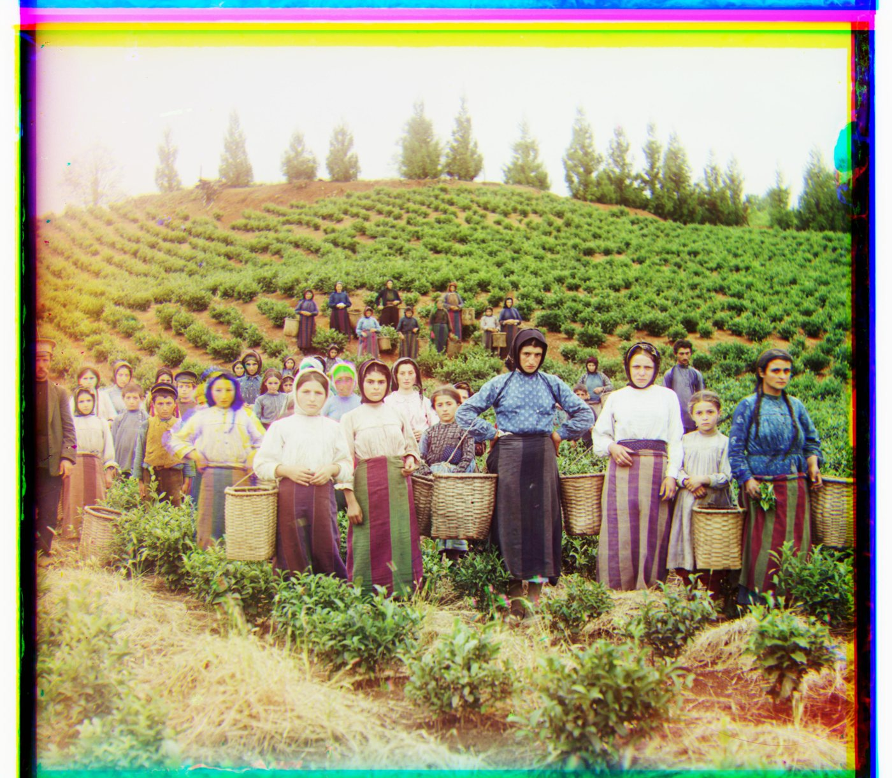

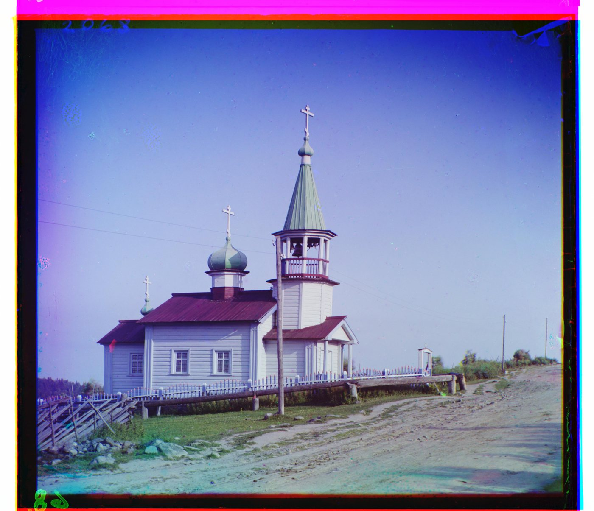
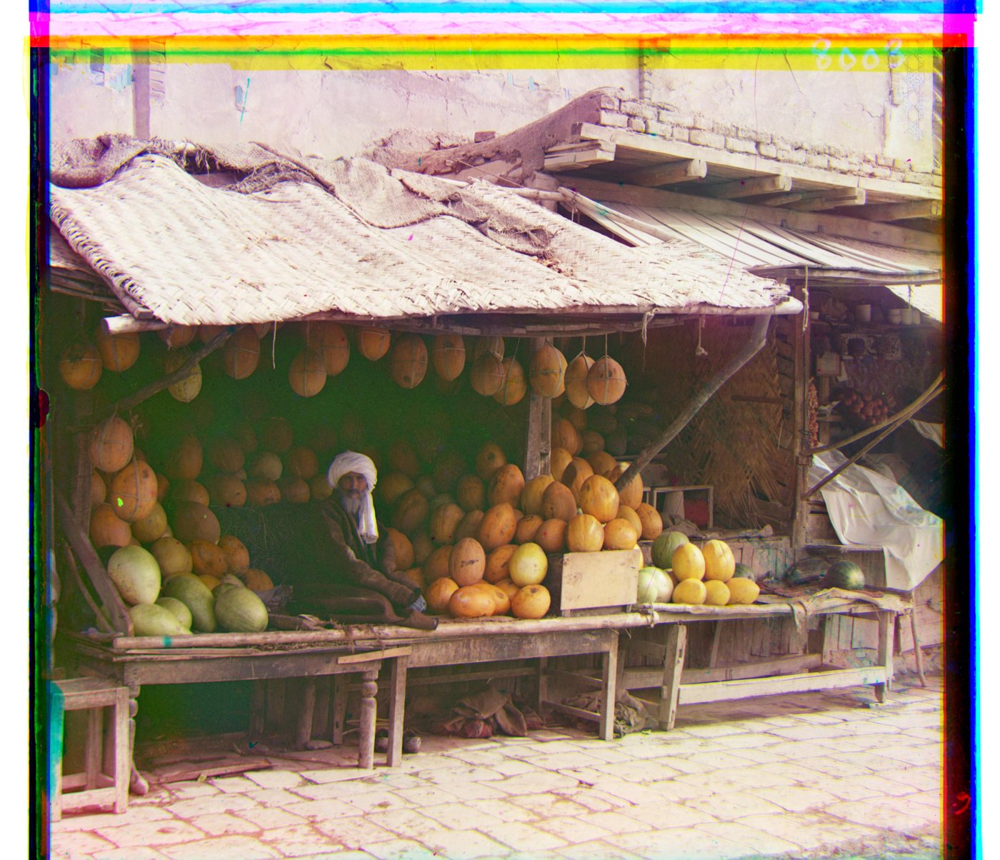


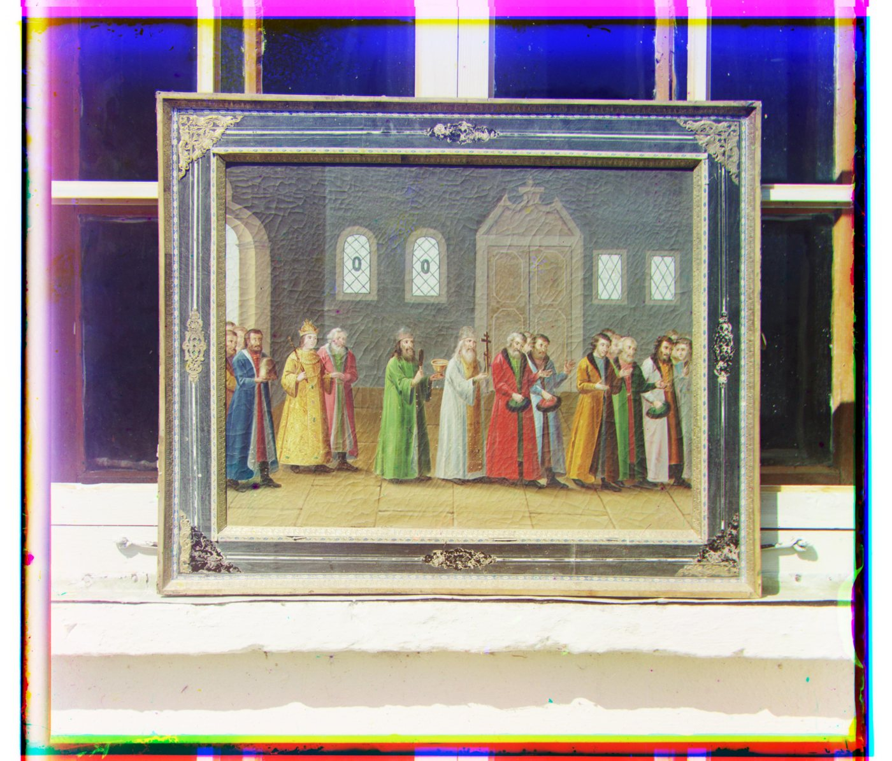

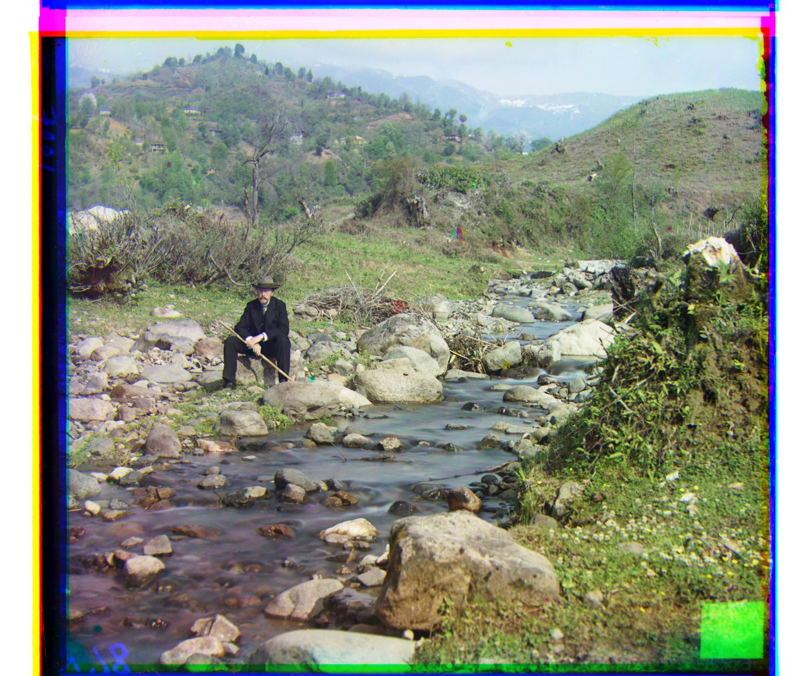


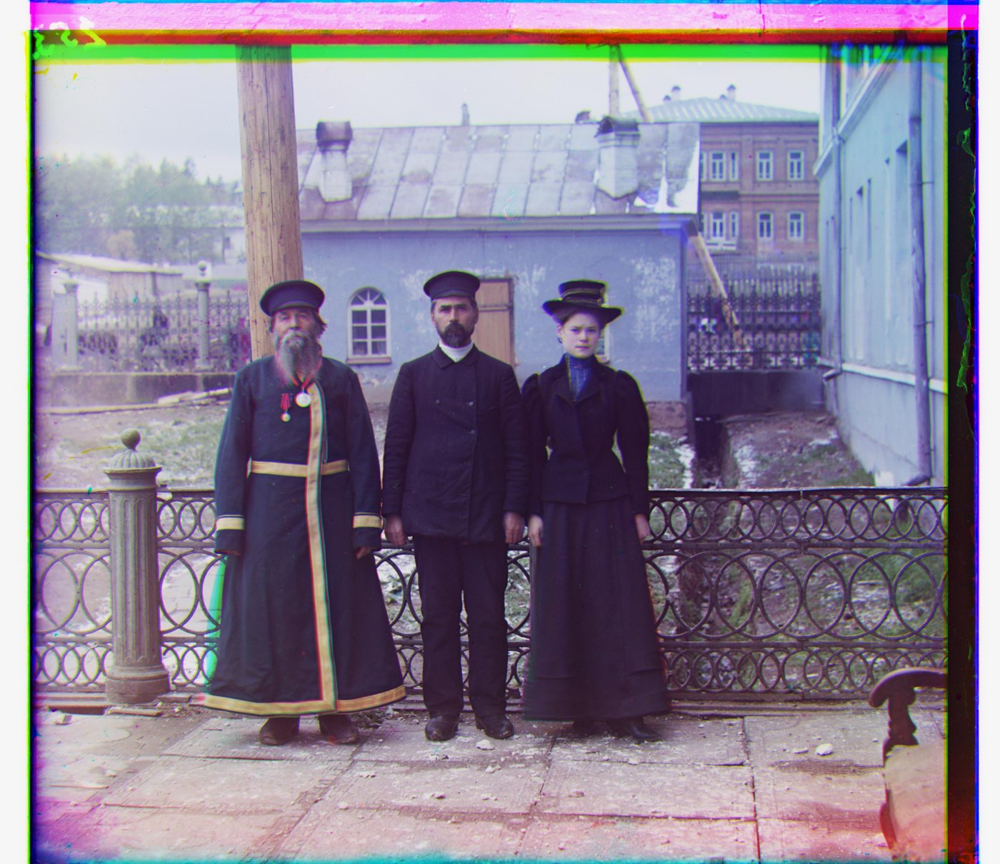


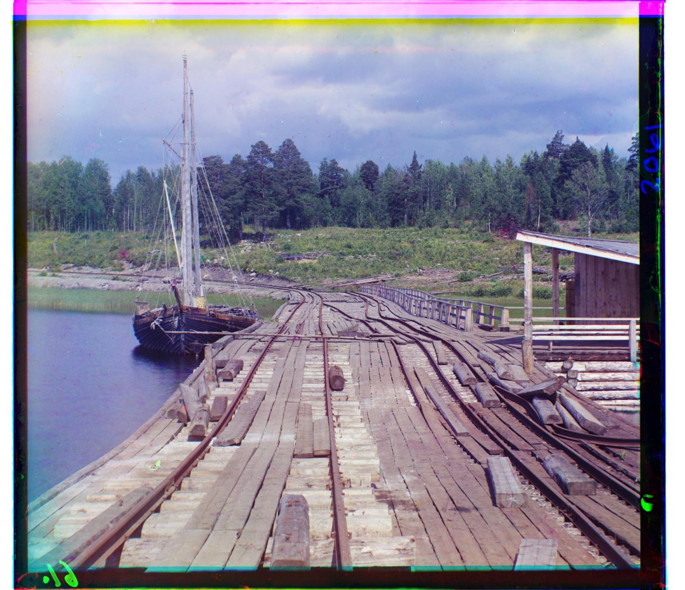
I also ran the same pyramid algorithm on three additional full-resolution plates from the Library of Congress: a landscape, a portrait, and a locomotive. The titles link to their original records.
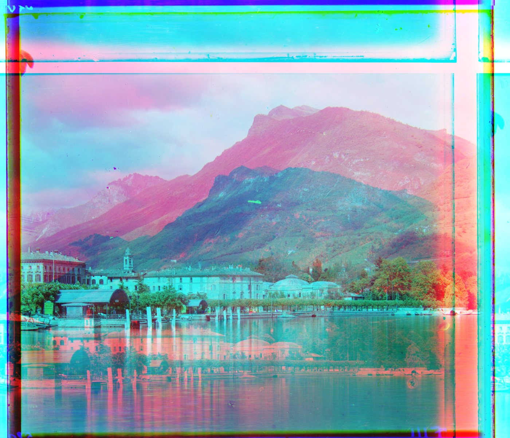

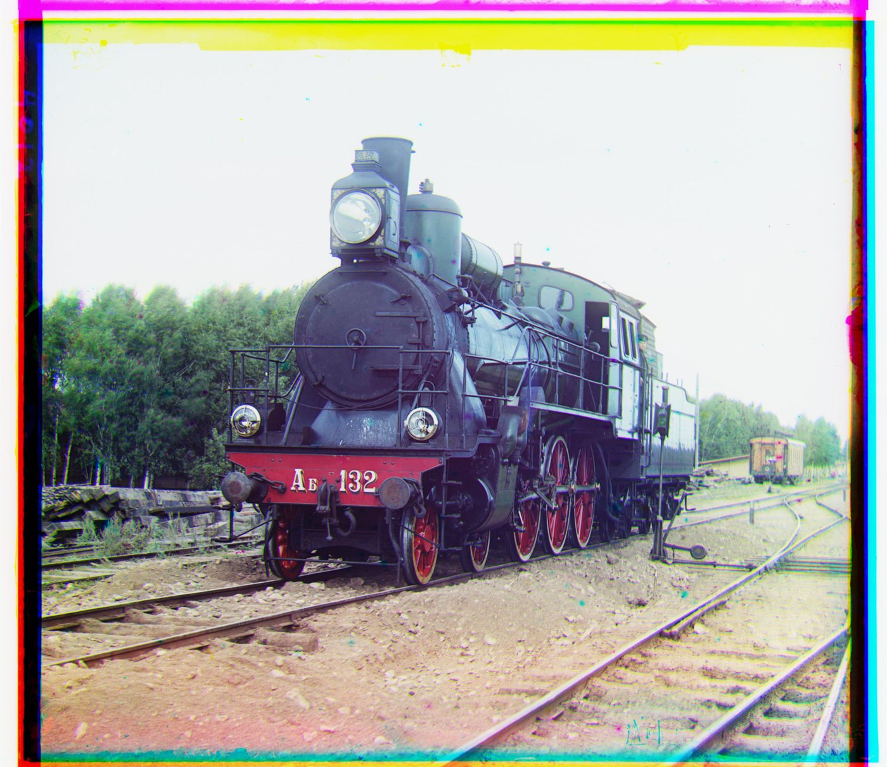

NCC can handle an overall brightness change, but different color channels do not always preserve the same light-and-dark pattern. Emir’s blue robe looks very different in the red and blue exposures. Direct red-to-blue NCC selected a large incorrect shift, producing the double image shown below. L2 also left red misaligned, with a shift of (43, 72).
I tried changing the reference while keeping the same pyramid search and NCC score. First, align red to the original green channel. Then align green to blue and move the already-aligned red along with it. In code, I add the red-to-green and green-to-blue offsets to get red’s final displacement relative to blue.
Red and green matched better for this image. The final red shift changed from (−483, 400) to (41, 106), removing the large double image. Green’s shift remained (24, 49). Both final offsets still use blue as the reference.


The gallery keeps the direct-to-blue results for comparison. The reference change is an additional experiment on Emir. All images are shown uncropped. The colored strips at their edges come from the original scan borders and pixels wrapping around during shifting.